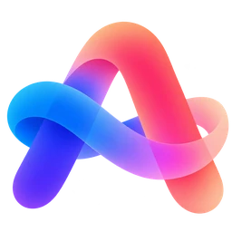
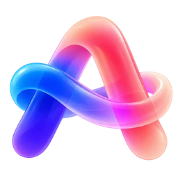

myArc shares one visual language across its website, user docs and native desktop browser shell. It ships on macOS today, with Linux and Windows ahead using the same tokens and OS-native surfaces.
Product decisions
Every visual choice traces back to a product constraint in docs/PRODUCT.md and AGENTS.md.
Yours to keep
Workspace state lives in local JSON files with no mandatory account or behavioral tracking. Interfaces stay free of sign-in walls, upsell banners and telemetry prompts.
Familiar from day one
Carry forward Arc's sidebar, Spaces, Profiles, pinned tabs, Favorites, command bar, Peek, Split View and Little Arc. Spaces group tabs by topic; Profiles isolate cookies, logins, history and extensions, and several Spaces can share one Profile.
Restrained site, personal browser
The website uses a quiet editorial grid, clear typography and small blue accents. The browser keeps that clarity while letting Spaces carry warmer themes, custom icons and tactile motion.
AI by choice
Built-in AI is off by default and never required to browse. External agent control over CLI and MCP is a separate opt-in capability scoped to an Agent Space with a visible Stop control.
Motion with meaning
Animated onboarding is a release requirement. Motion clarifies spatial transitions and honors prefers-reduced-motion and OS reduce-transparency settings from the first frame.
Built in the open
Code is GPL-3.0 and plans stay public. Every surface separates working behavior from planned work and documents third-party attribution.
Brand identity
Write the product name as myArc in display copy, headings and prose. Keep filenames, bundle identifiers, URLs and CLI commands lowercase (myarc). The primary tagline is myArc, forever yours.
Marks and lockups
Two ribbon finishes serve different surfaces: the matte mark sits on light backgrounds and navigation bars, while the glass mark pairs with dark navy stages. Keep 12% clear space around the ribbon and preserve its proportions and colors.


The horizontal lockup pairs a 1rem ribbon mark with the outlined Outfit ExtraBold wordmark. The custom barless A belongs only to the wordmark; headings and body copy use Outfit's standard letters. Header wordmarks sit at 1.75rem (1.375rem below 40rem) with a .5rem gap (.375rem below 40rem), and footer wordmarks sit at 1.5rem.
Color
Warm ivory and deep navy anchor the reading surfaces. Brand blue drives interactive focus and primary actions, while the ribbon spectrum supplies secondary accents for Spaces and artwork.
Brand palette
Light and dark tokens
The site follows prefers-color-scheme in HTML and CSS with no theme toggle, stored override or script detector. Semantic CSS variables switch surfaces and text while <picture> elements swap ink and ivory wordmarks. Primary buttons keep the same blue fill and white label in both themes.
--page--text--quiet--panel--link-solid--blue-deep--heartTypography
Outfit is the single embedded variable typeface across weights 100 to 900, falling back to Helvetica Neue and sans-serif. The root stays at 100% so browser text-size preferences work, and every size is authored in rem.
Type scale
Hero display
Article / docs title
Section heading
Subheading
Lede / intro
Body
UI / code / footer
Reading rhythm
- Section headings sit above their content and share a single scale per breakpoint.
- Long-form prose in docs and blog posts caps at
68chso lines stay easy to scan. - Inline code keeps Outfit inside a subtly bordered pill; fenced blocks sit on
--panelwith--ivorytext. - Space separates sections rather than horizontal divider rules.
Layout and surfaces
The site wrapper caps at 80rem with 3rem desktop gutters and 1.5rem mobile gutters at 48rem and below. Sections use 6rem vertical padding on desktop and 4.5rem on mobile.
A deterministic monochrome grain tile repeats at 16rem square behind page content. Light mode stacks two layers of the half-opacity WebP tile so texture reads on ivory; dark mode uses a single layer.
Native browser glass
Modal dialogs, About myArc, updater sheets and agent prompts share one centralized frosted-glass token set (currently implemented for macOS in browser/foundation/glass_mac.h, with the same geometry and opaque fallback contract planned for Linux and Windows). When OS reduce-transparency is on, or on systems without window blur, glass surfaces switch cleanly to opaque tinted fills.
Frosted dialog surface
16 DIP outer corners, 1 DIP specular rim, 24 DIP interior padding and 7 DIP action buttons over a blurred backdrop.
kCornerRadiuskButtonCornerRadiuskPaddingkTitleTopPaddingkButtonHeight / MinWidthkDarkGlassTintkLightGlassTintGlassMaterial presetsComponents
Interactive elements share the same focus ring (.1875rem solid var(--link-solid) with .25rem offset) and work without JavaScript.
Buttons and links
Pills, status badges and keys
Iconography
- Browser chrome and site controls use Lucide icons on a 24px grid at stroke width 2 (ISC license): sidebar actions, Peek controls, command bar search, Settings tabs, close buttons and the footer heart.
- Space icons use 45 filled Ionicons glyphs (MIT license) alongside Unicode 15.1 emoji with English CLDR search annotations.
- Status indicators pair text labels with distinct border styles so meaning never depends on color alone.
Motion and accessibility
Intro motion finishes within five seconds. Same-origin site navigation uses native cross-document View Transitions with a one-second blur and fade while keeping the header crisp. The homepage hero ribbon is drawn in WebGL, pauses off screen and falls back to the static image when motion is reduced.
120–200 ms220–350 ms600–1000 mscubic-bezier(.2, .7, .2, 1)1.5 s (40 BPM)prefers-reduced-motion: reducedisables View Transitions, smooth scrolling, hover scaling, pulse animations and spatial movement while preserving full content and layout.- Native frosted dialogs honor OS reduce-transparency settings and fall back to opaque tinted surfaces where window blur is unavailable.
- Text contrast meets WCAG AA in both light and dark themes, verified across desktop and mobile viewports.
Licensing and provenance
- myArc code is licensed under GPL-3.0.
- Outfit is licensed under SIL Open Font License 1.1. Lucide uses the ISC license, and Ionicons uses MIT.
- Ribbon marks (
myarc-matte.pngandmyarc-glass.png) are user-supplied originals whose redistribution and trademark clearance remain open, as recorded in ATTRIBUTION.md. - Downloadable brand assets, wallpapers, social cards and the full visual spec live in design/brand and design.md.